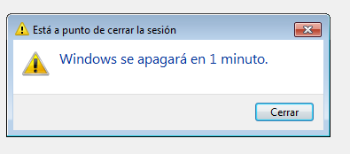

- Módulo: Administración de Sistemas Operativos
- Título del trabajo Tareas Programadas.
- Componentes del grupo: Isabel Quintero Sánchez.
- Curso Académico: 2014/2015
- Fecha de entrega: 20 de Enero de 2015
Para esta parte de la práctica utilizaremos una MV Lubuntu, donde realizaremos las tareas programadas que nos indica el enunciado.
En primer lugar, programaremos una tarea diferida para el apagado automático de la máquina. Para ello, primero debemos instalar "at" mediante el comando "apt-get install at".
Una vez instalado, indicaremos cuándo queremos que se realice la acción mediante el comando "at now" y luego, cuando entre al sistema pondremos el comando de apagado acompañado del tiempo en el que queramos que se apague la máquina(shutdown -h 1).
A continuación, crearemos una tarea programada periódica. Para ello, crearemos un fichero en el escritorio al que he llamado "prueba.log" para que quede registrada cada vez que se realice la tarea que hemos programado. Para programar la tarea, utilizaremos el comanto "crontab -e" para crearla.
Luego, al final de dicho fichero, crearemos la tarea: cada minuto (en la captura sale cada 30 minutos porque después lo cambié para que no lo hiciera muy a menudo), a todas horas, todos los días, todos los meses, todos los días de la semana y la ruta del fichero que hemos creado anteriormente (prueba.log).
Finalmente, crearemos una tarea asíncrona. Creamos un script con los datos que nos proporciona la práctica, dicho script lo copiamos a la carpeta "/etc/cron.daily". Una vez copiado, lo ejecutamos con el comando "anacron -n". Cuando creamos el script, debemos darle permisos para que nos deje ejecutarlo, esa acción se hace acción se hace a través del comando "chmod 777 script.sh".
Una vez terminada la parte de linux, pasamos a programar tareas en Windows, para ello utilizaremos una MV de Windows7.
Empezaremos con una tarea diferida de ejecutar el apagado de la máquina. Vamos al "programador de tareas -> crear tarea" y la programamos según creamos conveniente, es decir, sólo una vez.
Ponemos el comando de apagado y el tiempo en el que queramos que se apague la máquina.
A continuación, haremos una tarea periódica de mostrar un mensaje en pantalla, dicho mensaje lo programaremos para que salga cada 5 minutos, cada tres días a las 9.35.
Para acabar, realizaremos una tarea programada asíncrona. Que se realice semanalmente y que si no se ejecuta, reiniciarla cada 2 minutos.
Elegimos la tarea que queremos que se realice, será la comprobación del disco en busca de errores ("chkdsk") y comprobamos que se realiza.